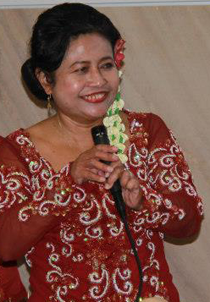

Anie Pelletier
Anie Pelletier is the founder of ARCINDA. She graduated as an Engineer from Institute Technology Surabaya, Indonesia, where she received the Student of Honor Award. After pursuing her career in Indonesia for a while, she got a scholarship opportunity to study abroad, where her journey began to an adventure life in USA. She went to University of Denver, received Master of Business Administration degree, with major in Finance RE and Computer Management Information Systems, where she met her husband, Mark. Coming from an artistic and musical background, she wanted to promote Indonesian culture through ARCINDA, where she leads gamelan/dance members, and performs the 'bonang' instrument.
